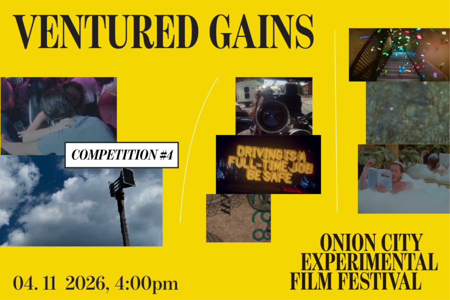

Onion City: Ventured Gains
Tally up your VENTURED GAINS to explore risk and reward with an abiding humor. Liability, surveillance, breaking, entering, investment, theft, and gambling. The works of this program take on “vulgar extravaganzas,” “fears and veneers,” and “social acerbities.”
Lineup:
Emergency Exits | Lucky Marvel | US | 2025 | 8 min | Chicago Festival Premiere
Single Double Triple | Mica Georgis | United Kingdom | 2025 | 3 min | World Festival Premiere
Learning from Learning from Las Vegas | Sam Taffel and Gillian Waldo | US | 2025 | 18 min | Chicago Festival Premiere
Injured? | Eislow Johnson | US | 2026 | 14 min | World Festival Premiere
Call of the Void | John Q. Public | US | 2025 | 7 min | World Festival Premiere
The Pit | Curtis Miller | US | 2026 | 7 min | World Festival Premiere